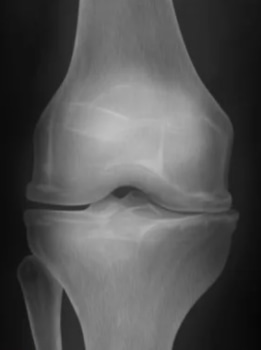
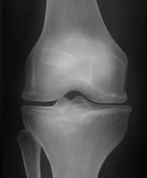
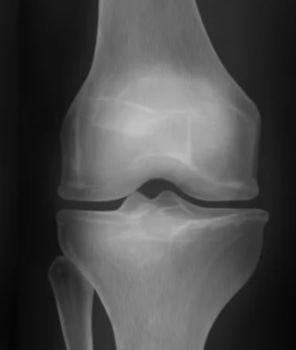
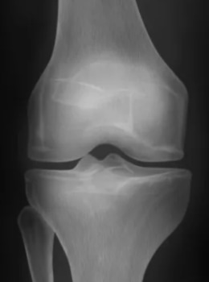

15:40
Медицина
Крем против боли, обнаруженный в Китае, способный вылечить артрит, артроз, остеопороз и боль в суставах за 15 дней, просто разрушая и восстанавливая суставы и кости в процессе «TRTT»
См. Следующую статью: как китайский исследователь открыл формулу для осуществления этого процесса? Как обезболивающий крем может восстановить суставы и кости всего за 15 дней без хирургического вмешательства, болезненных процедур или использования дорогих и опасных лекарств? По словам исследователя: «Он разрушает пораженные кости и суставы и создает новые из старых хрящей».
Исследователь Jin Quon утверждает, что более 10 лет назад полностью избавил пожилую женщину от запущенного артрита.
В сегодняшнем интервью он расскажет вам, как это возможно, как можно избавиться от боли и вылечить все заболевания суставов без хирургического вмешательства, болезненных процедур или дорогостоящих и опасных лекарств. Следуйте инструкциям ниже и познакомьтесь с новым кремом против боли.
Poliana: Здравствуйте, доктор Jin Quon. Многие эксперты говорят, что болезнь суставов и боль - обязательные спутники, когда вам исполняется 40 лет. Вы согласны с этим?
Jin Quon: Привет, Полиана! Конечно, это неправда. Это будет зависеть от врача, знает ли он правильное лечение и хочет ли он вылечить пациента или просто обмануть его.
На самом деле суставы можно восстановить в любом возрасте.
То есть, если мы знаем секрет и привнесем немного науки, проблемы можно будет решить даже дома, и очень быстро.
Тысячи людей уже сделали это в Азии, США и даже Европе, и я надеюсь, что уже делают это и Португалии.
Артрит
1 степень
2 степень
3 степень
4 степень
Poliana: А в чем секрет?
Jin Quon: Секрет в том, чтобы понять, почему тебе больно.
В энциклопедиях перечислено 147 причин развития артрита и остеоартрита, но на самом деле причина всегда одна - суставы, позвонки и хрящи теряют эластичность, отсюда и боль.
Они изнашиваются из-за неправильного обращения с телом, лишнего веса и, конечно же, возраста.
Главный секрет в том, что суставы нужно восстанавливать правильно, как я выяснил, и это работает для всех!
Poliana: Да, но после 40 лет практически невозможно восстановить суставы и кости, не так ли?
Jin Quon: Это БОЛЬШАЯ ЛОЖЬ! В Европе и США более 144 000 человек не болеют, просто следуя моему методу, и всем им больше 45 лет
Poliana: А по вашему методу удалось вылечить людей на более поздних стадиях, например, людей в инвалидной коляске из-за заболеваний суставов?
Jin Quon: Да, у нас было 3 случая, и мы добились успеха в 3.
Сначала они не очень поверили в мой метод, но после того, как они снова начали ходить, они были очень
счастливы и очень меня благодарили, но я
Но большинство людей, которые приходят ко мне, - обычные люди старше 40 лет, которые жалуются на возрастные заболевания.
У всех очень похожая проблема: болят суставы и кости. Они страдают, терпят боль, даже ходить тяжело. Все жалуются: «Почему я? Почему так больно?».
И я говорю: «Плач и жалобы не вылечат вашу боль и болезнь, вы в точности следуйте тому, что я говорю, и выздоровеете!
Poliana: Какие методы обычно рекомендуют врачи, которые редко помогают? И почему все время рекомендуют?
Jin Quon: Обычно они просят пациентов выполнить сложные движения из 96 гимнастических упражнений.
Это крайне неэффективный метод, но в то же время очень сложный и трудоемкий. Людям больно, тяжело, нет времени ходить в спортзал.
Этот вид лечения точно не поможет. Вскоре они прибегают к хирургическим операциям, которые почти всегда проводятся в спешке, что также не решает проблемы.
Потом идут на дорогостоящие процедуры, в личные поликлиники и принимают дорогие лекарства, приносящие большой вред здоровью.
Недавно я провел беседу с более чем 2000 врачей из Европы и США, представив новый крем, и в настоящее время большинство врачей больше не рекомендуют неэффективные методы.
Но в Португалии настаивают на ошибке, и поэтому я даю это интервью, чтобы все увидели, что есть что-то, что действительно работает и помогает при боли и заболеваниях суставов.
“Не затягиваете с лечением болезней суставов, это может привести к дорогостоящим операциям.”
Poliana: Я много слышала о массаже под давлением. Можно ли облегчить боль, надавив на определенную часть тела?
Jin Quon: Он может облегчить или уменьшить боль только на короткий период времени. Но это не полная терапия. Рано или поздно проблема вернется.
А, как известно, хороших специалистов всегда мало. Истинных мастеров можно пересчитать одной рукой. И почти все живут в странах Азии, а пациенты по всему миру.
Но не отчаивайтесь. Я всегда знал, что должен быть более современный и простой метод, и нашел его.
Poliana: Как интересно! Не могли бы вы подробнее рассказать об этом методе? В чем основная идея? Действительно ли ваше изобретение позволяет людям жить без боли и болезней суставов?
Jin Quon: Хирургия, упражнения, опасные лекарства и дорогостоящие методы лечения заболеваний суставов и боли - это пытка и пустая трата денег! Эти мои слова уже подтвердили миллионы людей во всем мире.
После рискованных неработающих методов, более 144 000 человек в Европе и США остались довольны, так как они уже прошли терапевтическое лечение с помощью Fortuflex и наслаждаются своим телом без боли.
Наша клиника первой начала использовать крем Fortuflex. Должен признаться, когда я услышал об этом, я просто посмеялся про себя, потому что не верил в его эффективность.
Но я был шокирован, когда мы сделали тесты. Мы провели опрос среди тех, кто использовал обезболивающий крем Fortuflex.
Он показал, что 4567 человек полностью избавились от всевозможных проявлений проблем с суставами за 15 дней. Это 94% участников.
5,6% участников почувствовали значительное улучшение, и только 0,4% не показали улучшения в течение 15 дней, но на 20-й день улучшения начали появляться.
Все протестированные пациенты единодушно согласились с тем, что этот метод в 10 раз проще, чем традиционная терапия рекомендованная экспертами, и намного лучше, чем операция или прием обезболивающих на протяжении всей жизни
До лечения
После лечения
Poliana: Значит обезболивающий крем называется Fortuflex?
Jin Quon: Точно, Fortuflex. Мы назвали его так сразу после того, как он прекратил страдания наших пациентов.
Poliana: Как Fortuflex действует на организм людей?
Jin Quon: Здесь нет чуда, это чистая наука. Fortuflex работает так хорошо, потому что, как только начинается применение, он сразу же начинает действовать на суставы и их воспаление, снимая боль в течение 1 часа и снимает сильные приступы боли.
После этого, Fortuflex разрушает старый поврежденный хрящ и создает новый без повреждений, вызывая процесс TRTT.
TRTT - это процесс, который удаляет мертвый хрящ и разрушает хрящ, уже пораженный болезнью суставов, предотвращая его распространение.
После удаления начинается процесс восстановления, в результате чего новый хрящ вставляется на место старых поврежденных.
Jin продолжает: Как только организм обнаруживает действие ТЗТТ, он начинает помогать и обеспечивать кости и суставы еще большим количеством кальция и хрящей.
Уже после первого использования Fortuflex помогает уменьшить боль, воспаление и повреждение костей вызванное возрастом или другими причинами.
Кроме того, Fortuflex обманывает мозг, создавая впечатление, что кости нуждаются в большем количестве витаминов, минералов и хрящей, делая кости сильнее, а суставы - более подвижными и крепкими.
Fortuflex единственный крем с технологией TRTT, поэтому он отличается от всех других процедур.
Со временем хрящ стирается
Poliana: Кто-нибудь может им воспользоваться?
Jin Quon: Сегодня 80% профессионалов, работающих в области ревматологии в США и Европе, рекомендуют Fortuflex как средство обезболивания, а также легкое и быстрое восстановление суставов и костей.
Это именно то, что они рекомендуют своим пациентам, поскольку у крема нет побочных эффектов, его эффективность доказана научно и более чем 144 000 тысяч пациентов, и самое главное: он умещается в кармане каждого.
Таким образом, буквально каждый может применить Fortuflex.
Poliana: По инструкции достаточно применять его 2 раза в день?
Jin Quon: Да! Вы сразу почувствуете облегчение от боли, вскоре после того, как начнется процесс TRTT, который я объяснил выше, и через ТРИ ДНЯ боль полностью исчезнет, а суставы и кости уже находятся в процессе восстановления.
Все кто использует этот крем чувствуют себя очень хорошо, чувство боли исчезает, и жизнь становится легче и безболезненнее.
Обычно, когда они ходят или занимаются какой-либо деятельностью, при которой раньше чувствовали боль, они замечают, что боль исчезла без каких-либо усилий, просто применяя Fortuflex ! Все в восторге и в то же время поражены результатами!
Poliana: Значит, результаты будут уже через три дня?
Jin Quon: Это не точная наука, некоторые люди уже в первый день избавляются от боли, другие в первые 3 дня чувствуют себя излеченными от боли... Но 80% людей, которые использовали Fortuflex, уже через три дня начали получать реальные результаты.
Poliana: Вы можете поделиться с нами результатами этих людей?
Jin Quon: Да, конечно. Мы попросили разрешения на все результаты, которые мы покажем вам здесь. Мы хотим, чтобы Fortuflex воспринимался серьезно как крем против боли.
Для этого нам нужно показать реальные результаты и тесты. В первом тесте присутствовали 5000 добровольцев с сильной болью в суставах, артритом, артрозом и остеопорозом.
Этот препарат применялся 2 раза в день во время курса терапии, и ни один из пациентов не изменил свой обычный ритм жизни.
Результаты тестирования (через месяц)
- Полностью избавились от боли и восстановили суставы за 8 дней - 18% пациентов.
- Полностью избавились от боли и восстановили суставы за 15 дней - 77% пациентов.
- Избавились от боли за 8 дней, но восстановили суставы только за 35 дней - 4% пациентов.
- Только избавились от боли - 1% пациентов.
- Побороли с артрит, артроз и остеопороз - 98% пациентов.
- Нормализовали биологические процессы в организме - 100% пациентов.
- Отсутствие побочных эффектов и отсутствие привыкания - 100% пациентов.
Вот результаты тех, кто использовал Fortuflex:
-
Результат через 20 день использования Fortuflex
 -
Результат через 21 дней использования Fortuflex
 -
Результат через 22 дня использования Fortuflex
 -
Результат через 26 дней использования Fortuflex

Poliana: Fortuflex всегда эффективен?
Jin Quon: Как видно из приведенных выше тестов и результатов, ВСЕМ пациентам и тем кто использовал Fortuflex удалось избавиться от боли и вылечить болезни суставов.
Итак, вы можете попробовать различные решения для лечения суставов и боли. Некоторые из них включают операции с опасными побочными эффектами, чего нельзя сказать о Fortuflex.
В других случаях приходится тратить часы на дорогостоящее и нефункциональное лечение и даже принимать лекарства в течение многих лет, что наносит большой вред здоровью. При таком большом количестве вариантов нормально относиться к результатам скептически.
Итак, вместо того, чтобы что-либо обещать, я призываю вас использовать Fortuflex в течение 30 дней ! Я гарантирую, что у вас будет такой же хороший результат, как и у всех, кто им пользовался!
Poliana: Хотели бы вы оставить сообщение для наших читателей?
Для начала я просто дам вам несколько советов. Это продукт, с помощью которого вы можете вылечить себя от боли в суставах и таких заболеваний, как артрит и остеоартрит. Это один из самых ценных продуктов в мире.
Формула Fortuflex включает в себя TRTT, большое количество соединений и натуральных питательных веществ ... он наиболее богат кальцием, магнием и коллагеном типа 2, чем любой другой продукт в мире.
Важно покупать на официальном сайте. Только на этом сайте вы будете на 100% уверены в получении оригинального Fortuflex. Также вы можете заказать его и здесь. Хочу, чтобы читатели были счастливы и избавились от болей в суставах и болезней!
У вас точно все получится, просто верьте! Самое лучшее - это чувство радости и удовлетворения от того, что вы живете без боли и можете делать все без ограничений!
Я искренне надеюсь, что смогу помочь многим людям и что показанные здесь результаты послужат мотивацией для достижения этой великой цели! Верьте в себя, и вам удастся излечить это великое зло!
(И получите его дома в течении 1-3 дней!)
78€
39€
50%
Официальная форма заказа
О собеседнике: Jin Quon
Родился 9 мая 1969 года в районе Панью, кантон, Китай. В 15 лет он переехал в Гонконг, где окончил медицинский факультет Китайского университета Гонконга. Специализируется на ревматологе в больнице Глениглз.